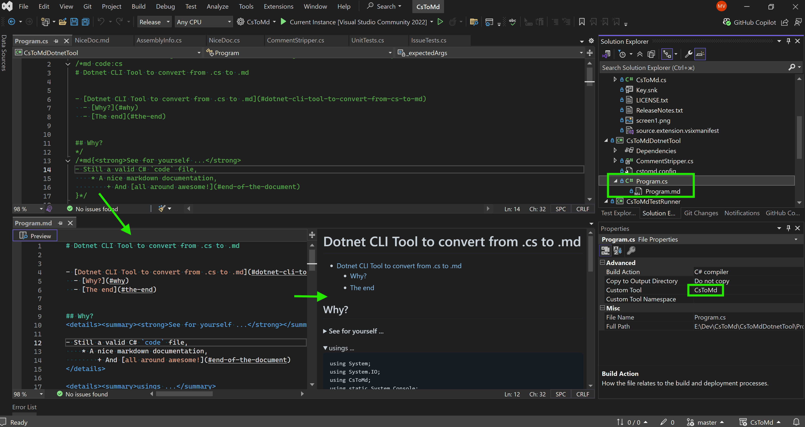

The idea is to have a normal C# .cs file with the special comments /*md, md*/, and //md which
will be stripped when converting the file into the respective Markdown .md file. There are couple of additional features but this is basically it.
Now you have the documentation always up-to-date with the runnable samples in the normal .NET Test library project with NUnit, XUnit, etc.
You may check the DryIoc documentation project for the real-world case example.
The additional features:
//md code:csharp, or just
//md code: to add fences, and //md code:-- to stop adding fences. The directive may be used multiple times through the file.
//md{ and //md} comments into the collapsed markdown details.cstomd.config file in the folder with the lines starters to be removed completely from the generated
documentation file.This extension for Visual Studio 2019+ contains the CustomTool File Generator.
When applied to the C# source file it looks like this:

CustomTool property to CsToMd.